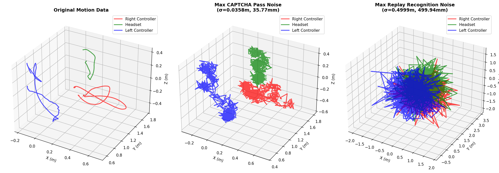
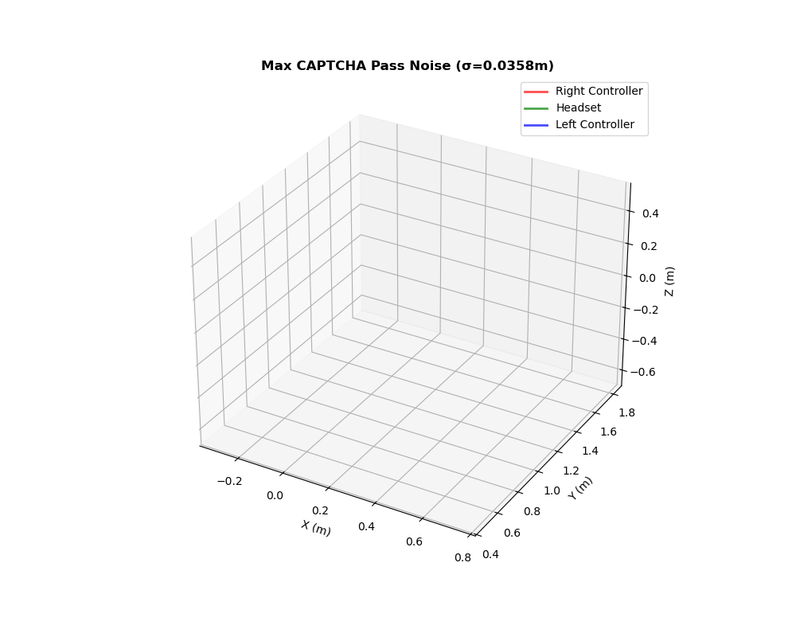

Three 3D motion graphs.
The left is the original motion data of a user completing the two-panel CAPTCHA.
The middle is the motion data with the maximal amount of noise while still successfilly completing the CAPTCHA.
The right is the motion data with the amount of noise where our replay algorithm does not detect it as the original.
Animated visualization of the original motion data of a user completing the two-panel CAPTCHA.

Animated visualization of completing the CAPTCHA with maximal noise applied to the motion data.
Animated visualization of the replay with noise applied, where the replay algorithm no longer detects it as the original motion.